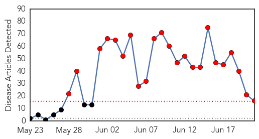
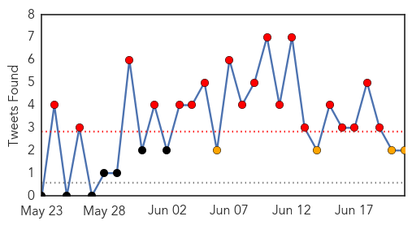
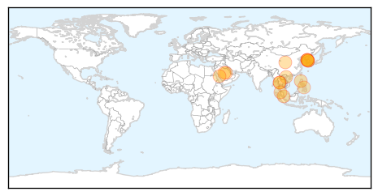
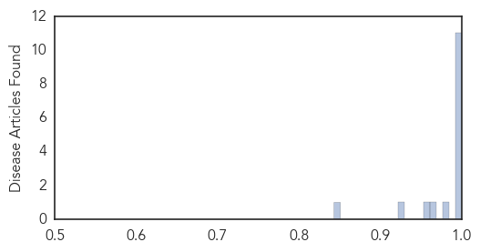

Toggle navigation
Early Warning
Daily Alerts
Middle East Respiratory Syndrome
Jun 21, 2015
Compare to:
-
Dengue Fever
Hemmorhagic Fever
Mold/Fungal Infection
Influenza
Meningitis
Pertussis / Whooping Cough
Cholera
Hepatitis
Chikungunya
Yellow Fever
Bubonic Plague
West Nile Virus
Swine Flu
Ebola
Measles
Unknown
Mumps
30 Day Trends
Web: 23
alerts
, 0
warnings
Twitter: 19
alerts
, 4
warnings
Top Articles:
1.000
WHO declares MERS outbreak in South Korea as 'large and complex'
1.000
With MERS Outbreak Reaching Thailand, What Do Malaysians Have To Be Prepared For?
0.999
UAE Reports MERS Death
0.999
MERS: understanding the mysterious virus
0.998
Oriental medicine may help treat MERS
0.998
S.Korea Reports Another MERS Death, Sees Signs Outbreak Easing
0.997
Expert talks about MERS and the Korean outbreak
0.996
First suit filed over authority’s response to virus-INSIDE Korea JoongAng Daily
0.994
MERS shows no sign of abatement - Regional
0.994
No need for travel advisories for countries with MERS – Palace
0.994
Asian MERS Outbreak Expands As Thailand Reports First Case
0.984
Johor man first person in Asia to succumb to MERS - Nation
0.967
Hanoi to provide 29 billion VND additional funding for prevention of MERS-CoV
0.957
MERS patient in Thailand hospital, condition stable
0.925
Malaysia steps up MERS screening at all entry points
0.843
Lapu-Lapu City to health office: ‘Work together vs virus entry’
Top Tweets:
0.685
AFD Blog `@WHO: A Saudi MERS Infographic' MERS-CoV http://t.co/isruslb6eL
0.552
AFD Blog `KSID: 1/3rd Of Korean MERS Cases Without Co-Morbidities' MERS-CoV http://t.co/l0qIuZberx
Web/News Articles

Tweets

Article Locations

Article Confidences
